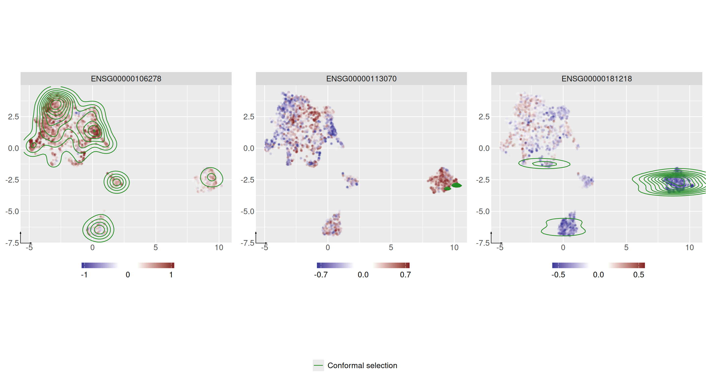
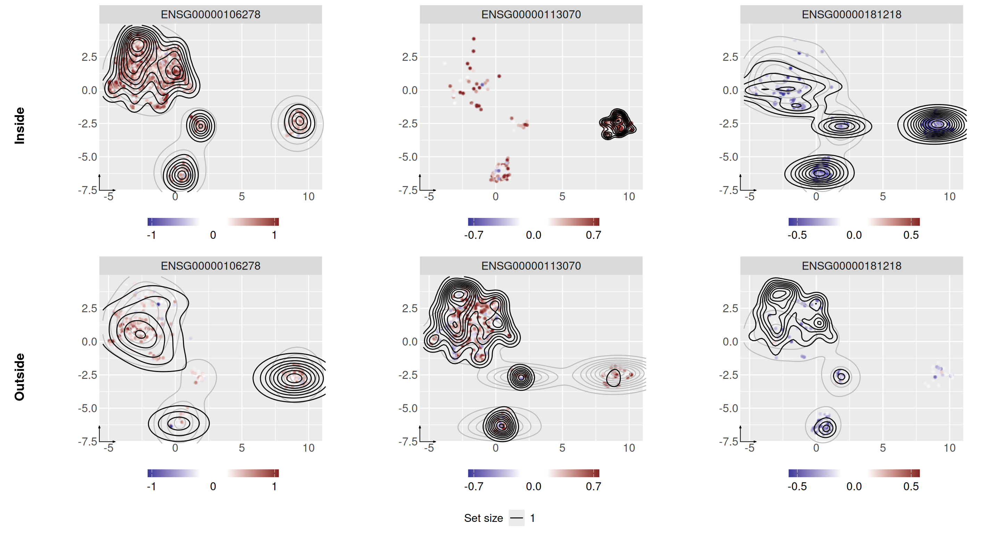

conformeR-introduction.RmdconformeR provides conformal prediction layers for the cell neighborhood construction step of the LEMUR framework. It implements two complementary approaches, conformal clustering and conformal selection, to quantify uncertainty in the resulting cell neighborhoods, together with tools for visualizing and interpreting the resulting uncertainty sets.
To install conformeR, run into your console:
knitr::opts_chunk$set(warning = FALSE, message = FALSE)
if (!requireNamespace("conformeR", quietly = TRUE)) {
devtools::install_github("https://github.com/juslecl/conformeR")
}
library(conformeR)
#> Loading required package: SingleCellExperiment
#> Loading required package: SummarizedExperiment
#> Loading required package: MatrixGenerics
#> Loading required package: matrixStats
#>
#> Attaching package: 'MatrixGenerics'
#> The following objects are masked from 'package:matrixStats':
#>
#> colAlls, colAnyNAs, colAnys, colAvgsPerRowSet, colCollapse,
#> colCounts, colCummaxs, colCummins, colCumprods, colCumsums,
#> colDiffs, colIQRDiffs, colIQRs, colLogSumExps, colMadDiffs,
#> colMads, colMaxs, colMeans2, colMedians, colMins, colOrderStats,
#> colProds, colQuantiles, colRanges, colRanks, colSdDiffs, colSds,
#> colSums2, colTabulates, colVarDiffs, colVars, colWeightedMads,
#> colWeightedMeans, colWeightedMedians, colWeightedSds,
#> colWeightedVars, rowAlls, rowAnyNAs, rowAnys, rowAvgsPerColSet,
#> rowCollapse, rowCounts, rowCummaxs, rowCummins, rowCumprods,
#> rowCumsums, rowDiffs, rowIQRDiffs, rowIQRs, rowLogSumExps,
#> rowMadDiffs, rowMads, rowMaxs, rowMeans2, rowMedians, rowMins,
#> rowOrderStats, rowProds, rowQuantiles, rowRanges, rowRanks,
#> rowSdDiffs, rowSds, rowSums2, rowTabulates, rowVarDiffs, rowVars,
#> rowWeightedMads, rowWeightedMeans, rowWeightedMedians,
#> rowWeightedSds, rowWeightedVars
#> Loading required package: GenomicRanges
#> Loading required package: stats4
#> Loading required package: BiocGenerics
#> Loading required package: generics
#>
#> Attaching package: 'generics'
#> The following objects are masked from 'package:base':
#>
#> as.difftime, as.factor, as.ordered, intersect, is.element, setdiff,
#> setequal, union
#>
#> Attaching package: 'BiocGenerics'
#> The following objects are masked from 'package:stats':
#>
#> IQR, mad, sd, var, xtabs
#> The following objects are masked from 'package:base':
#>
#> anyDuplicated, aperm, append, as.data.frame, basename, cbind,
#> colnames, dirname, do.call, duplicated, eval, evalq, Filter, Find,
#> get, grep, grepl, is.unsorted, lapply, Map, mapply, match, mget,
#> order, paste, pmax, pmax.int, pmin, pmin.int, Position, rank,
#> rbind, Reduce, rownames, sapply, saveRDS, table, tapply, unique,
#> unsplit, which.max, which.min
#> Loading required package: S4Vectors
#>
#> Attaching package: 'S4Vectors'
#> The following object is masked from 'package:utils':
#>
#> findMatches
#> The following objects are masked from 'package:base':
#>
#> expand.grid, I, unname
#> Loading required package: IRanges
#> Loading required package: Seqinfo
#> Loading required package: Biobase
#> Welcome to Bioconductor
#>
#> Vignettes contain introductory material; view with
#> 'browseVignettes()'. To cite Bioconductor, see
#> 'citation("Biobase")', and for packages 'citation("pkgname")'.
#>
#> Attaching package: 'Biobase'
#> The following object is masked from 'package:MatrixGenerics':
#>
#> rowMedians
#> The following objects are masked from 'package:matrixStats':
#>
#> anyMissing, rowMedians
library(dplyr)
#>
#> Attaching package: 'dplyr'
#> The following object is masked from 'package:Biobase':
#>
#> combine
#> The following objects are masked from 'package:GenomicRanges':
#>
#> intersect, setdiff, union
#> The following object is masked from 'package:Seqinfo':
#>
#> intersect
#> The following objects are masked from 'package:IRanges':
#>
#> collapse, desc, intersect, setdiff, slice, union
#> The following objects are masked from 'package:S4Vectors':
#>
#> first, intersect, rename, setdiff, setequal, union
#> The following objects are masked from 'package:BiocGenerics':
#>
#> combine, intersect, setdiff, setequal, union
#> The following object is masked from 'package:generics':
#>
#> explain
#> The following object is masked from 'package:matrixStats':
#>
#> count
#> The following objects are masked from 'package:stats':
#>
#> filter, lag
#> The following objects are masked from 'package:base':
#>
#> intersect, setdiff, setequal, union
library(ggplot2)
library(tibble)In this vignette, we run the package on a reduced version of the single-cell data by Zhao, W., Dovas, A., Spinazzi, E., et al. (2021). Deconvolution of cell type-specific drug responses in human tumor tissue with single-cell RNA-seq. , 13, 82. (GEO accession: GSE148842).
As any input given to conformeR it has already been processes and quality checks were ran.
We first have a look at the data.
data("sce_vignette")
sce_vignette
#> class: SingleCellExperiment
#> dim: 3000 10000
#> metadata(0):
#> assays(2): counts logcounts
#> rownames(3000): ENSG00000118785 ENSG00000210082 ... ENSG00000100139
#> ENSG00000188229
#> rowData names(2): gid gene
#> colnames(10000): cell 67764 cell 9225 ... cell 26100 cell 18997
#> colData names(3): cell_type condition patient_id
#> reducedDimNames(0):
#> mainExpName: NULL
#> altExpNames(0):
head(colData(sce_vignette))
#> DataFrame with 6 rows and 3 columns
#> cell_type condition patient_id
#> <character> <character> <character>
#> cell 67764 Myeloid cells ctrl PW034
#> cell 9225 Tumor cells ctrl PW030
#> cell 16771 Myeloid cells ctrl PW030
#> cell 68550 Myeloid cells ctrl PW034
#> cell 76008 Myeloid cells ctrl PW034
#> cell 19112 Tumor cells ctrl PW030We select some genes of interest.
pan_affect_genes <- rowData(sce_vignette) %>%
as_tibble() %>%
dplyr::select(gid, gene) %>%
filter(gene %in% c("HIST3H2A", "PTPRZ1", "HBEGF"))
pan_affect_genes
#> # A tibble: 3 × 2
#> gid gene
#> <chr> <chr>
#> 1 ENSG00000106278 PTPRZ1
#> 2 ENSG00000113070 HBEGF
#> 3 ENSG00000181218 HIST3H2ARun the conformeR main function on the dataset. By default, target coverage for conformal prediction is of cp_alpha, data split proportions are fixed to 50% training set, of which 25% calibration set. This can be modified with arguments cp_train_frac and cp_cal_frac.
set.seed(2002)
res <- conformeR(
sce_vignette,
design_lemur = ~ patient_id + condition,
contrast_column = "condition",
genes_of_interest = pan_affect_genes$gid,
what = c("conf_selection", "conf_clustering"),
n_cores = 1,
verbose = TRUE
)We look at the conformal layer results.
cp_res <- res$conf_results |>
left_join(pan_affect_genes, by=c("gene"="gid")) |>
dplyr::select(-gene)|>
dplyr::rename(gene=`gene.y`)What is the size of conformal selection for each gene? How much of the cell sample does it represent?
cp_res |> group_by(gene) |> summarize("Size neighborhood"=sum(inside_cs),"% neighborhood"=round(sum(inside_cs)/ncol(res$fit_lemur),2)*100)
#> # A tibble: 3 × 3
#> gene `Size neighborhood` `% neighborhood`
#> <chr> <int> <dbl>
#> 1 HBEGF 4 0
#> 2 HIST3H2A 374 7
#> 3 PTPRZ1 2765 55What is the size of the prediction sets for each gene?
cp_res |> group_by(gene) |> summarize("Prediction sets = inside"=sum((inside_cc==1)),"Prediction sets = outside"=sum((outside_cc==1)),"Prediction sets size 0"=sum(inside_cc+outside_cc==0))
#> # A tibble: 3 × 4
#> gene Prediction sets = ins…¹ Prediction sets = ou…² Prediction sets size…³
#> <chr> <int> <int> <int>
#> 1 HBEGF 551 4198 252
#> 2 HIST3H2A 1715 3005 281
#> 3 PTPRZ1 3728 986 287
#> # ℹ abbreviated names: ¹`Prediction sets = inside`,
#> # ²`Prediction sets = outside`, ³`Prediction sets size 0`We plot the conformal selection on top of LEMUR neighborhoods.
plotter_conformal_selection(res, pan_affect_genes$gid)
Finally, we plot conformal clustering on top of LEMUR neighborhoods.
plotter_conformal_clustering(res, pan_affect_genes$gid)